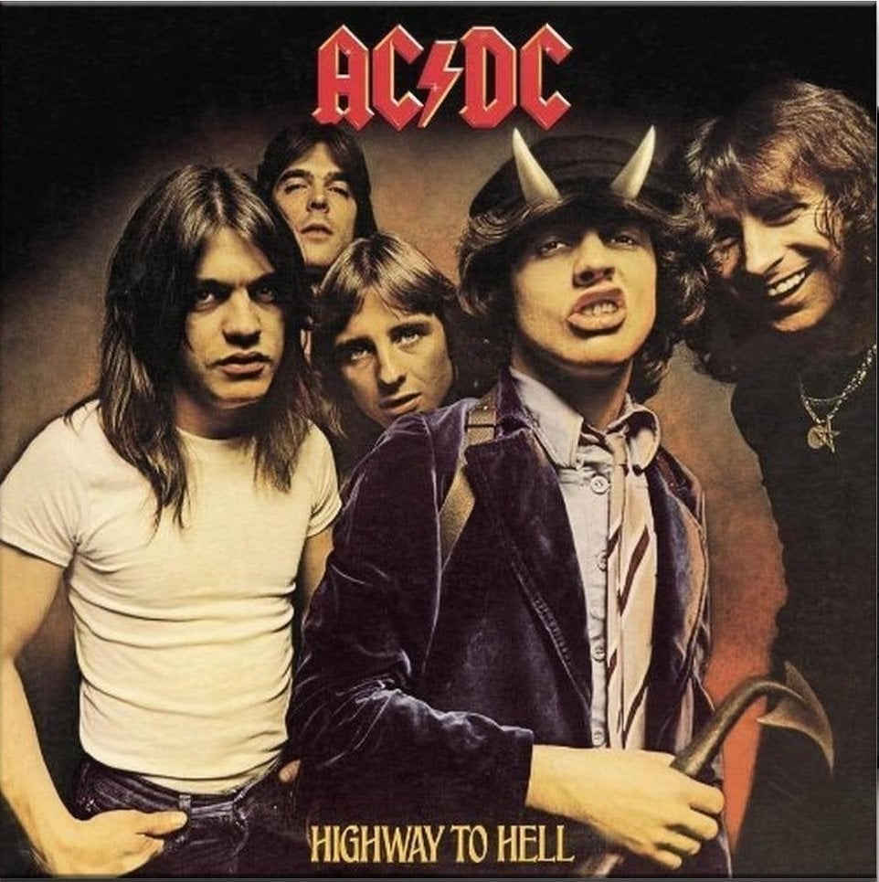
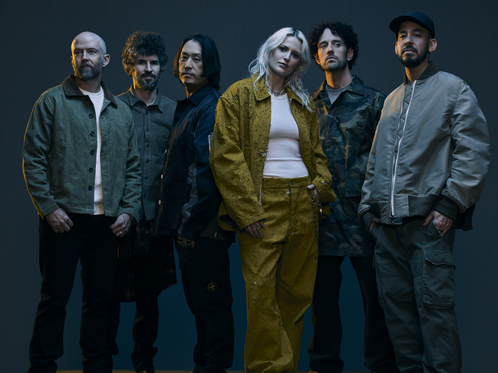
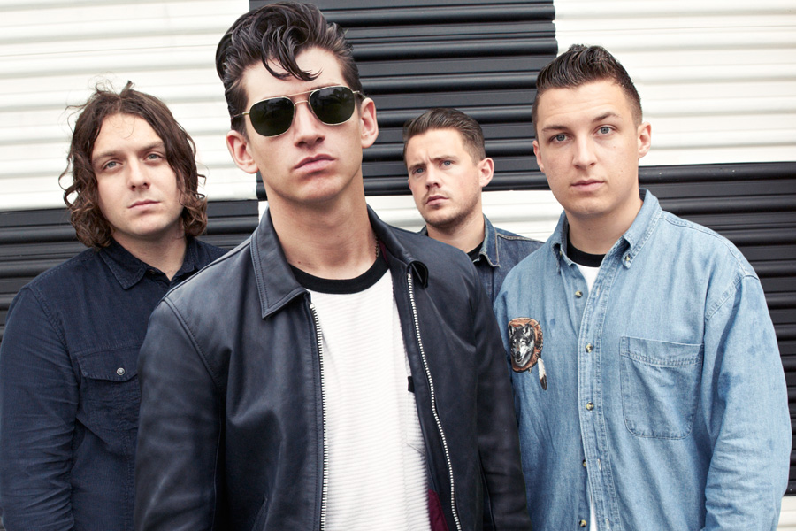

Spotify je nejpoužívanější hudební streamovací platforma. Umělec musí mít více než jednoho člena, proto jsem nevybrala slavné zpěváky jako Taylor Swift. Slávu těchto kapel jsem určovala podle celkového počtu posluchačů na spotify uvedeném na Této stránce. Dále musí kapela tvořit hudbu žánru rock. Přeji příjemné čtení.

AC/DC je australská rocková kapela založená v roce 1973 bratry Angusem a Malcolmem Youngovými, známá svým energickým zvukem a elektrizujícími koncerty. Jejich hity jako Highway to Hell či Back in Black se staly ikonami rockové hudby po celém světě.
Více o AC/DC
Queen je britská rocková kapela založená v roce 1970, známá svou originální kombinací rocku, opery a popu. Proslavila se hity jako Bohemian Rhapsody, We Will Rock You a Don’t Stop Me Now. Díky charismatu Freddieho Mercuryho a jedinečnému zvuku se stala jednou z nejvlivnějších kapel všech dob.
Více o Queen
Linkin Park je americká rocková a nu-metalová kapela založená v roce 1996 v Kalifornii, známá kombinací rocku, rapu a elektroniky. Kapela se proslavila hity jako In the End, Numb nebo Crawling, které se staly ikonami moderní hudby. Jejich energické skladby a emotivní texty oslovily miliony fanoušků po celém světě a učinily z Linkin Park jednu z nejvlivnějších kapel svého žánru.
Více o Linkin Park
Arctic Monkeys je britská rocková kapela založená v roce 2002 v Sheffieldu, známá kombinací indie rocku, garage rocku a post-punk revivalu. Proslavili se debutovým albem Whatever People Say I Am, That’s What I’m Not a hity jako I Bet You Look Good on the Dancefloor. Jejich chytlavé riffy, inteligentní texty a energická vystoupení z nich učinily jednu z nejvlivnějších britských kapel 21. století.
Více o Arctic Monkeys